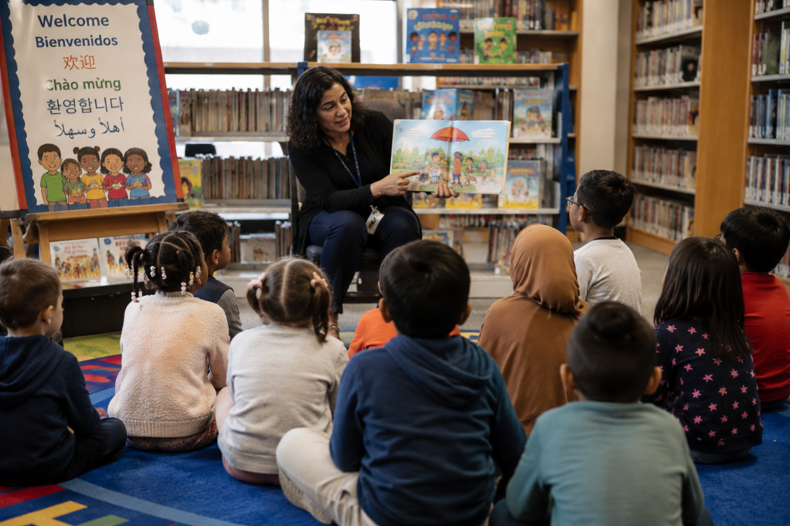

For many years, I have been interested in a simple question: What becomes visible when we learn to see differently?
That question first emerged while studying multilingual families in science museums. Later, it guided my work with preservice teachers learning to recognize family strengths. Today, it has brought me to public libraries.
Libraries are places where children, families, books, information, and communities come together. They are also places where participation takes many forms. Some children answer questions aloud. Others participate through movement, gesture, translation, observation, or quiet interaction with caregivers.

Storytime offers opportunities to examine how participation, belonging, and literacy are recognized in public institutions.
As I begin this new line of research at the University of Illinois School of Information Sciences, I am asking:
How do librarians learn to recognize and support forms of participation that often go unnoticed?
Public libraries are among the most accessible educational institutions in society. Families enter without enrollment, testing, or formal prerequisites. They encounter books, information, stories, technologies, and opportunities for connection.
Because libraries sit at the intersection of literacy, information access, and community life, they provide a powerful setting for understanding how institutions welcome, recognize, and support diverse families.
This project builds on my previous research in multilingual family learning, professional vision, and teacher education. Across these settings, a common theme has emerged: institutions often fail to recognize forms of competence that do not fit dominant expectations.
My current work explores how librarians, educators, and community organizations can develop new ways of seeing multilingual families as knowledgeable participants in learning.